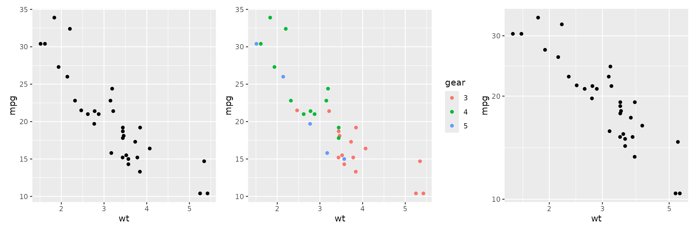
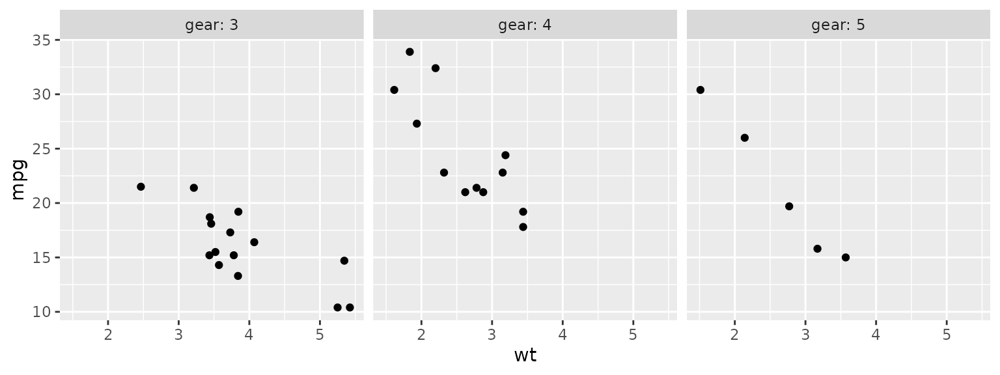
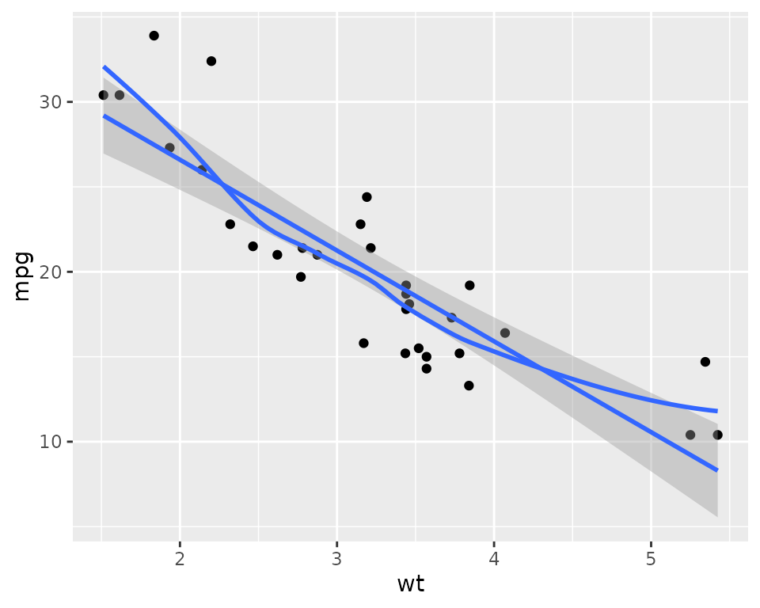
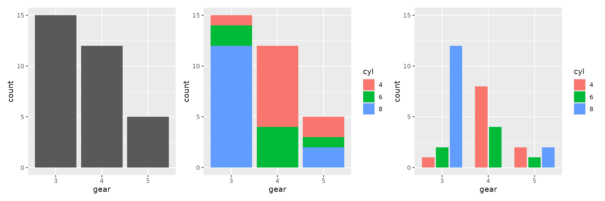
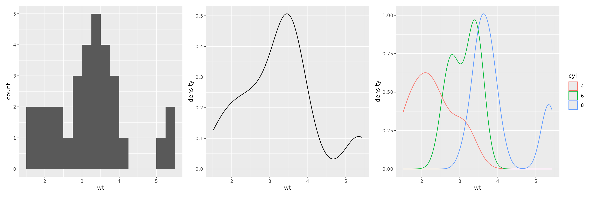
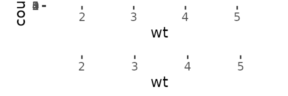
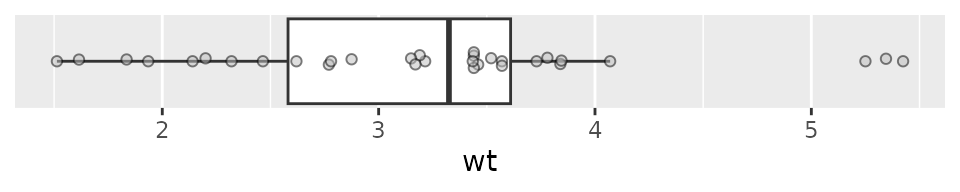
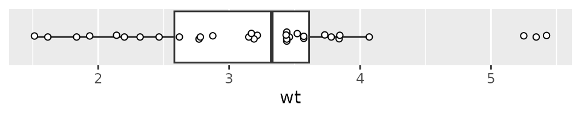
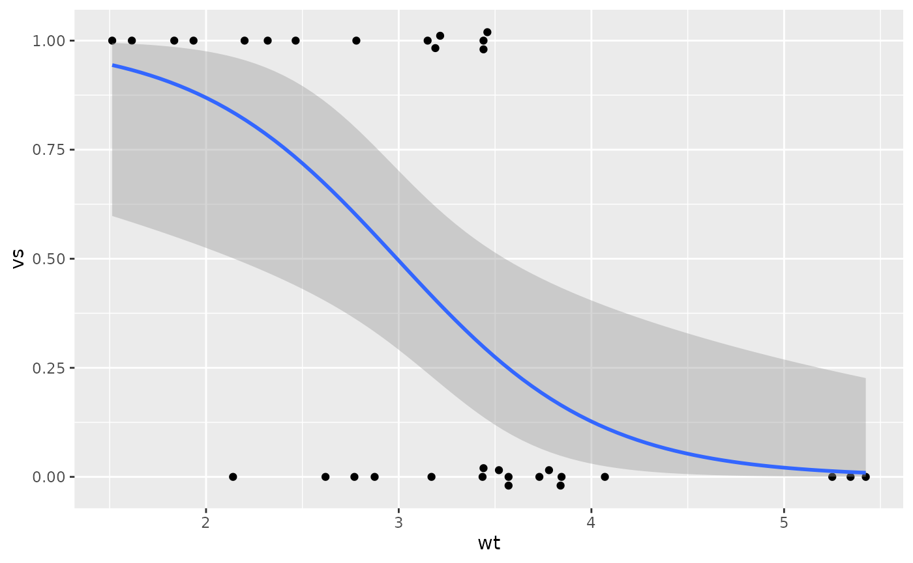
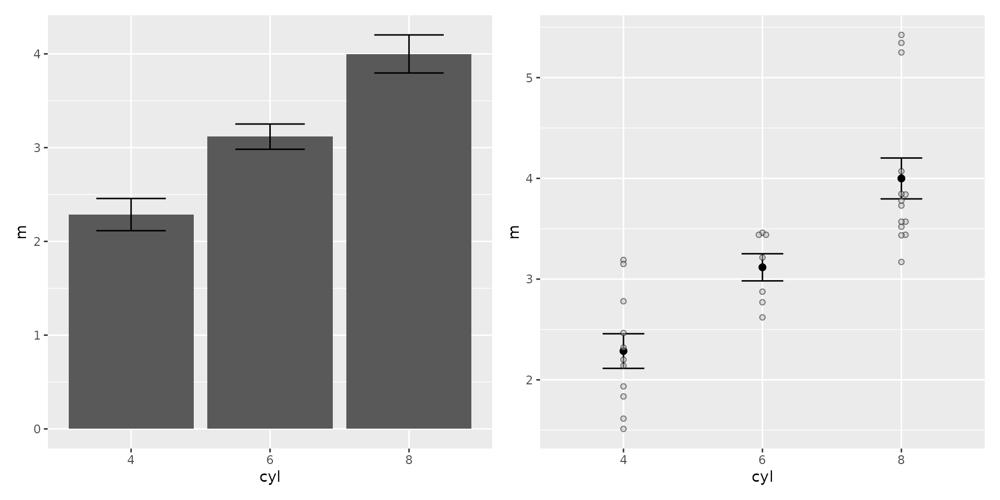

Graphical Output
graphics.RmdMost of the graphical functions we will use come from the
ggplot package. There are a couple additions from this
package to make a couple things easier.
-
geom_beeswarm, originally from theggbeeswarmpackage, modified to handle horizontal plots better and tailor the default settings. -
hide_y_axis, to hide the y-axis of a plot -
scale_y_binary, Converts a factor on y-axis to a 0/1 binary variable, to allow adding proportions. -
geom_smooth_logistic, to add a logistic regression fit to a plot
Combining plots
The patchwork package allows one to combine together
several plots from ggplot using the mathematical operators
of + (for side by side) and / (for above and
below). For more control, see the package
documentation.
Resizing plots
To resize a plot, use the fig-width and
fig-height options at the top of the chunk. The default
size is usually about 6 by 6.
This is also the easiest way to change the size of the text in a plot; when a plot is made larger, the text stays the same size, so is smaller relative to the rest of the plot.
#| fig-width: 5
#| fig-height: 4Scatterplots
plot1 <- ggplot(mtcars2) + aes(x=wt, y=mpg) + geom_point()
plot2 <- ggplot(mtcars2) + aes(x=wt, y=mpg, color=gear) + geom_point()
plot1 + plot2
ggplot(mtcars2) + aes(x=wt, y=mpg) + geom_point() +
facet_wrap(~gear, labeller = label_both)
ggplot(mtcars2) + aes(x=wt, y=mpg) + geom_point() +
stat_smooth(method="lm", se=FALSE) +
stat_smooth(se=FALSE)
#> `geom_smooth()` using formula = 'y ~ x'
#> `geom_smooth()` using method = 'loess' and formula = 'y ~ x'
Bar plots
plot1 <- ggplot(mtcars2) + aes(gear) + geom_bar()
plot2 <- ggplot(mtcars2) + aes(gear, fill=cyl) + geom_bar()
plot3 <- ggplot(mtcars2) + aes(gear, fill=cyl) + geom_bars()
plot1 + plot2 + plot3
Histograms and Density Plots
plot1 <- ggplot(mtcars2) + aes(wt) + geom_histogram(binwidth=0.25, boundary=0)
plot2 <- ggplot(mtcars2) + aes(wt) + geom_density()
plot3 <- ggplot(mtcars2) + aes(wt, color=cyl) + geom_density()
plot1 + plot2 + plot3
Boxplots
by default now uses compact swarm, with random priority
ggplot(mtcars2) + aes(wt) + geom_boxplot() +
hide_y_axis()
ggplot(mtcars2) + aes(x=wt, y=0) + geom_boxplot(outlier.shape = NA) +
geom_beeswarm(cex=4, pch=21, fill="gray", alpha=0.5, orientation="y") +
hide_y_axis()
ggplot(mtcars2) + aes(x=wt, y=0) + geom_boxplot(outlier.shape = NA) +
geom_point(position=position_beeswarm(
orientation="y", cex=4),
pch=21, fill="white") +
hide_y_axis()
plot1 <- ggplot(mtcars2) + aes(x=cyl, y=wt) + geom_boxplot()
plot2 <- ggplot(mtcars2) + aes(x=cyl, y=wt) + geom_boxplot(outlier.shape = NA) +
geom_beeswarm(cex=2, pch=21, fill="gray", alpha=0.5)
plot1 + plot2
Logistic Regression plots
ggplot(mtcars2) + aes(x=wt, y=vs, group=1) +
geom_beeswarm(orientation="y", cex=2) +
scale_y_binary() +
geom_smooth_logistic()
Estimates with error bars
plot1 <- ggplot(wt_mse) + aes(cyl, m, ymin=m-se, ymax=m+se) +
geom_col() + geom_errorbar(width=0.5)
plot2 <- ggplot(wt_mse) + aes(x=cyl) +
geom_errorbar(aes(ymin=m-se, ymax=m+se), width=0.3) +
geom_point(aes(y=m), size=2) +
geom_beeswarm(aes(y=wt), data=mtcars2, pch=21, fill="gray", alpha=0.5)
plot1 + plot2